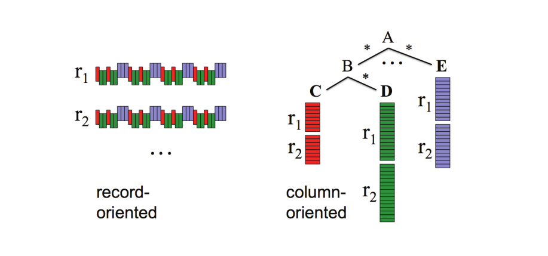

Columnar Storageの特徴
Definition 1 Columnar Storage
- 1つのレコードをcolumn valuesグループ毎に分割し，それぞれを異なるストレージ領域に格納する技術
- 従来のデータベースは通常，レコード全体を1つのストレージ領域に格納する
- ファイルフォーマットまで着目すると，column-based formatの例としてParquetがある

Columnar Storageの特徴
Example 1 columnar storage vs row-based storage
SNO PRICE CITY SNAME
--- ------ ---- -----
S1 20 London Smith
S2 10 Paris Jones
S3 30 Paris Blake
S4 20 London Clark
S5 30 Athens Adamsというような FOO テーブルを考えます．シンプルなColumnar storageの場合，以下のように;で区切られたグループ毎にストーレージ領域に保存します
S1S2S3S4S5;2010302030;LondonParisParisLondonAthens;SmithJonesBlakeClarkAdams 一方，row-based storageの場合
S120LondonSmith;S210ParisJones;S330ParisBlake;S420LondonClark;S530AthensAdamsそれぞれのstorageパターンに対して
SELECT CITY, SUM(PRICE)
FROM FOO
GROUP BY CITY;というクエリを実行すると
- Row-based storage: 全列(=不要列（SNO, SNAME）もI/O)を毎回読み込んでから，PRICE と CITY を抽出して集計
- Columnar storage: 必要な列だけ読み込む．集計系クエリで圧倒的に速い
Example 2 row-based storageの方が効率が良い場合
次のようなSELECT文ではrow-based storageの方が効率的な可能性があります
SELECT *
FROM SomeTable
WHERE col_1 = 'A';col_a = 'A' の条件によってレコード数を大きく絞り込めたとしても，columnar storageの場合は結局 SELECT * によってすべての列にアクセスする必要があります． col_1 がインデックスを持つ場合だと，インデックス探索で col_1 = 'A' の行位置を即座に特定してから必要なストーレージ領域のみ読み込めば良いので，効率的なスキャンが期待できます．
Columnar storageとLIMIT句
SELECT * FROM table LIMIT 10;と実行するとColumnar storage型のBigQueryでもPostgreSQLでも，返す行は最大 10 行と結果の行数を制限するという意味では同じです． ただし，クエリ実行計画まで着目するとその挙動に差異があります．
BigQueryの場合
LIMITはクエリで返す行数を制限する句LIMITは「処理するデータ量」を制限するものではなく，最終的に返す行数を制御するだけ- そのため，
SELECT *にLIMITを付けても，テーブル全体が読み取られるため課金対象の量を減らすことはできない - 結果件数だけ制御するだけで，処理量や課金は減らない
PostgreSQLの場合
- Postgresは，row-basedデータベースで基本的に必要な行だけ返す
LIMITを付けると，クエリプランナーは「どのくらい行を読むか」を考慮するため，実際の処理コストは下がることが多い- 結果件数だけでなく，実行計画にも効いて実際の処理量削減につながる余地がある